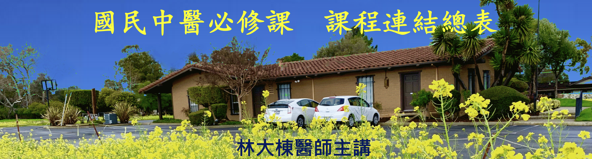

【第一部分: 中醫基礎理論】
0001_陰陽_中醫陰陽的根本定義及應用 : https://youtu.be/M9ULcp4f_pM
0002_陰陽_陰陽虛實之階段 : https://youtu.be/Ao7FPE6EidQ
0003_陰陽_中醫陰陽的其他應用１: https://youtu.be/xRTvNZXYcXU
0004_陰陽_中醫陰陽的其他應用２ : https://youtu.be/FM4VAi5Ap9M
0005_陰陽_氣血與陰陽 : https://youtu.be/vPQ40IO3_Ac
0006_陰陽_臟腑分陰陽 : https://youtu.be/Rg4umDdaydw
0007_陰陽_陰陽之間的關係 : https://youtu.be/01NVN6-mcFk
0008_陰陽_陰陽對立制約 : https://youtu.be/jwn8GyI3XFw
0009_陰陽_陰陽互根 : https://youtu.be/g9xU9d2kLgw
0010_陰陽_陰陽消長 : https://youtu.be/P7XzoG9rNSg
0011_陰陽_陰陽轉化 : https://youtu.be/VB07b5Fwyq4
0012_陰陽_陰陽衍化 : https://youtu.be/-Z1v5SQa3q0
0013_陰陽_陰陽互相隔拒 : https://youtu.be/APVpnCRo4bE
0014_陰陽_扶陽與滋陰 : https://youtu.be/tvJ4vrw6v-o
0015_五行臟腑_中醫五行理論：相生與相克 : https://youtu.be/ZxEnNIiK7fc
0016_五行臟腑_中醫五行理論：相侮與相乘 : https://youtu.be/XrSr5yGib_I
0017_五行臟腑_中醫五行理論：母子補瀉 : https://youtu.be/qswZIW9W5JU
0018_五行臟腑_中醫五行臟腑理論 : https://youtu.be/gzsVdBO0m3o
0019_五行臟腑_中醫五行臟腑理論之君火與相火 : https://youtu.be/VEbbHah2QaE
0020_五行臟腑_中醫臟象學簡介 : https://youtu.be/SqJ7gyMhLbk
0021_五行臟腑_心 : https://youtu.be/HzCP0AApiLQ
0022_五行臟腑_心包 : https://youtu.be/ecuOdG1nics
0023_五行臟腑_肝 : https://youtu.be/kZbqS6iyYF8
0024_五行臟腑_脾 : https://youtu.be/dt9y2xsBgAQ
0025_五行臟腑_肺 : https://youtu.be/7QMne9JTSiI
0026_五行臟腑_腎 : https://youtu.be/iPRvvlbufKs
0027_五行臟腑_臟腑之間的關係 : https://youtu.be/luccYKoTsIA
0028_五行臟腑_陰陽臟腑之間的虛實關係 : https://youtu.be/G4V6bXnb0UE
0029_精氣血津液_概說 : https://youtu.be/GasnxQ8plBg
0030_精氣血津液_精 : https://youtu.be/KFDnVQUYjm0
0031_精氣血津液_氣_各種氣的生成與相互關係_1 : https://youtu.be/J8xf7oE8Jww
0032_精氣血津液_氣_各種氣的生成與相互關係_2 : https://youtu.be/67I0kgKwvjo
0033_精氣血津液_氣_各種氣的生成與相互關係_3 : https://youtu.be/oiRrU86JhPU
0034_精氣血津液_氣_各種氣的生成與相互關係_4 : https://youtu.be/stxZfOZRvDg
0035_精氣血津液_氣_氣的運動形式 : https://youtu.be/2pyn9esdnv4
0036_精氣血津液_氣_各種氣受損引起之病症舉例 : https://youtu.be/25RjjJNc07E
0037_精氣血津液_血 : https://youtu.be/tIu7WadgN_M
0038_精氣血津液_血_和血有關的臟腑 : https://youtu.be/TM7eLXoEzJE
0039_精氣血津液_血_血病的主因 : https://youtu.be/XpRZqlblc8A
0040_精氣血津液_津液_津和液的分別 : https://youtu.be/htalzC1ps0o
0041_精氣血津液_津液_水液運化之相關臟腑總整理 : https://youtu.be/UsHjsXX0UHc
0042_精氣血津液_津液_水液運化圖 : https://youtu.be/jCwso2PIiAQ
【第二部分: 中醫病因學】
0043_中醫病因學_三因論 : https://youtu.be/Goo6WxerZ8Q
0044_中醫病因學_外因：六淫_風 : https://youtu.be/9crUl9Dibis
0045_中醫病因學_外因：六淫_寒 : https://youtu.be/yFKq95-Vww4
0046_中醫病因學_外因：六淫_暑 : https://youtu.be/-bTQoWzJGIs
0047_中醫病因學_外因：六淫_濕 : https://youtu.be/PG0IcAzW2Qs
0048_中醫病因學_外因：六淫_燥 : https://youtu.be/DbA5J2kqOPA
0049_中醫病因學_外因：六淫_火 : https://youtu.be/zLjdDMmIPxQ
0050_中醫病因學_內因：七情與臟腑的關係 : https://youtu.be/HBVhUoTv5sw
0051_中醫病因學_內因：七情與氣血的關係 : https://youtu.be/3A-fWrb1aq8
0052_中醫病因學_不內不外因：飲食失宜致病 : https://youtu.be/ClURSCv1rIg
0053_中醫病因學_不內不外因：勞逸不當致病 : https://youtu.be/gnjFDJJQesU
【第三部分: 中醫標本理論的治病原則】
國民中醫必修課_0054_標本理論的治病原則_因果的辨別 : https://youtu.be/HsGtFpUwxcE
國民中醫必修課_0055_標本理論的治病原則_只治本的時機 : https://youtu.be/KtDQ7C9ivkg
國民中醫必修課_0056_標本理論的治病原則_標本同治的時機 : https://youtu.be/5JoQnRcDsVs
國民中醫必修課_0057_標本理論的治病原則_先治標再治本的時機 : https://youtu.be/QH0g18Gc53c
國民中醫必修課_0058_標本理論的治病原則_先治本再治標的時機 : https://youtu.be/IZ_cF_MQapM
【第四部分: 中醫診斷學】
國民中醫必修課_0059_中醫診斷學_四診 : https://youtu.be/HEDpIBtElcc
國民中醫必修課_0060_中醫診斷學_望診：整體體態 : https://youtu.be/qO7X3aSKqFc
國民中醫必修課_0061_中醫診斷學_望診：望色_五官_皮膚 : https://youtu.be/XyHbaN5-Kh8
國民中醫必修課_0062_中醫診斷學_望診：望鼻 : https://youtu.be/tl0MYJ31jKc
國民中醫必修課_0063_中醫診斷學_望診：望眼 : https://youtu.be/zJhoyl36d2Y
國民中醫必修課_0064_中醫診斷學_望診：望耳 : https://youtu.be/_MUun4-Rrz0
國民中醫必修課_0065_中醫診斷學_望診：望髮 : https://youtu.be/T96c_6zbPlo
國民中醫必修課_0066_中醫診斷學_望診：望口唇 : https://youtu.be/Ng1yItFqlvQ
國民中醫必修課_0067_中醫診斷學_望診：望舌1 : https://youtu.be/tPLn2I19JT8
國民中醫必修課_0068_中醫診斷學_望診：望舌2 : https://youtu.be/zVmE0QEzQl8
國民中醫必修課_0069_中醫診斷學_望診：望舌3 : https://youtu.be/btPvIzFaFqg
國民中醫必修課_0070_中醫診斷學_望診：望舌4 : https://youtu.be/1wAYmpxcVM4
國民中醫必修課_0071_中醫診斷學_望診：望舌5 : https://youtu.be/PWwi8Yc9rCE
國民中醫必修課_0072_中醫診斷學_望診：望舌6 : https://youtu.be/kQdf2jP3lt0
國民中醫必修課_0073_中醫診斷學_望診：望舌7 : https://youtu.be/r7S7dBI57qI
國民中醫必修課_0074_中醫診斷學_望診：望舌8 : https://youtu.be/O0yk6yd_b0I
國民中醫必修課_0075_中醫診斷學_望診：望舌9 : https://youtu.be/e-z8NRsOhl8
國民中醫必修課_0076_中醫診斷學_望診：望舌10 : https://youtu.be/iOkHhNywklo
國民中醫必修課_0077_中醫診斷學_望診：望舌11 : https://youtu.be/0rd5q55mSfs
國民中醫必修課_0078_中醫診斷學_望診：望舌12 : https://youtu.be/W24DX7e8Ij4
國民中醫必修課_0079_中醫診斷學_望診：望舌13 : https://youtu.be/lQSOgTOVMDg
國民中醫必修課_0080_中醫診斷學_望診：小兒指診 : https://youtu.be/qXegj8kiynU
國民中醫必修課_0081_中醫診斷學_小兒診斷要點 : https://youtu.be/-6Cf2IUKo8M
國民中醫必修課_0082_中醫診斷學_聞診要點 : https://youtu.be/39AsfpDRUM4
國民中醫必修課_0083_中醫診斷學_問診：十問 : https://youtu.be/xQ7jovjuh7g
國民中醫必修課_0084_中醫診斷學_問診：問寒熱1 : https://youtu.be/XmhYJUWWXN0
國民中醫必修課_0085_中醫診斷學_問診：問寒熱2 : https://youtu.be/DNz2BbvfiVg
國民中醫必修課_0086_中醫診斷學_問診：問汗 : https://youtu.be/4ywhyi0BjJg
國民中醫必修課_0087_中醫診斷學_問診：問痛_問身痛 : https://youtu.be/67WD7WGJvjE
國民中醫必修課_0088_中醫診斷學_問診：問痛_問頭痛 : https://youtu.be/DiSdh4hQJj8
國民中醫必修課_0089_中醫診斷學_問診：問二便_大便 : https://youtu.be/wBIb3MIk6Pk
國民中醫必修課_0090_中醫診斷學_問診：問二便_小便 : https://youtu.be/WwHbaPeBmuE
國民中醫必修課_0091_中醫診斷學_問診：問飲食 : https://youtu.be/0bARHdZRgZM
國民中醫必修課_0092_中醫診斷學_問診：問飲水 : https://youtu.be/CTKzxjnTcaQ
國民中醫必修課_0093_中醫診斷學_問診：問睡眠1 : https://youtu.be/NJ6pY44VGmA
國民中醫必修課_0094_中醫診斷學_問診：問睡眠2 : https://youtu.be/6xLsXgWvWyA
國民中醫必修課_0095_中醫診斷學_問診：問睡眠3 : https://youtu.be/c_1eYIyaRfM
國民中醫必修課_0096_中醫診斷學_切診：脈診和按診 : https://youtu.be/eRQK1rQ4WYU
國民中醫必修課_0097_中醫診斷學_切診：按診1 : https://youtu.be/bxy_nevWg8k
國民中醫必修課_0098_中醫診斷學_切診：按診之腹診1 : https://youtu.be/UKMybgMmpnE
國民中醫必修課_0099_中醫診斷學_切診：按診之腹診2 : https://youtu.be/Ibn004XCtU8
國民中醫必修課_0100_中醫診斷學_切診：按診之腹診3 : https://youtu.be/ExRTmc7RoNI
國民中醫必修課_0101_中醫診斷學_切診：脈診1 : https://youtu.be/36Z79VoqzQ0
國民中醫必修課_0102_中醫診斷學_切診：脈診2 : https://youtu.be/SqXNkxqnFoM
國民中醫必修課_0103_中醫診斷學_切診：脈診3 : https://youtu.be/h5OUh3tQErY
國民中醫必修課_0104_中醫診斷學_切診：脈診4 : https://youtu.be/WPU7fKgDXvE
國民中醫必修課_0105_中醫診斷學_切診：脈診5 : https://youtu.be/dffMk7p3hjE
國民中醫必修課_0106_中醫診斷學_切診：脈診6 : https://youtu.be/D1L_FkXHBA4
國民中醫必修課_0107_中醫診斷學_切診：脈診7 : https://youtu.be/iviKvDdT56c
國民中醫必修課_0108_中醫診斷學_切診：脈診8 : https://youtu.be/Mo_1rh-Rfpw
【第五部分: 中醫辨證學】
國民中醫必修課_0109_中醫辨證學_辨證論治 : https://youtu.be/z_Jbs-SzGxg
國民中醫必修課_0110_中醫辨證學_八綱辨證 : https://youtu.be/ybi0Qec-YYM
國民中醫必修課_0111_中醫辨證學_六經辨證 : https://youtu.be/3I17UES0dDo
國民中醫必修課_0112_中醫辨證學_五行辨證 : https://youtu.be/LsH6UNOYdXc
國民中醫必修課_0113_中醫辨證學_五行辨證＿母不生子 : https://youtu.be/9K-vIQqTxpo
國民中醫必修課_0114_中醫辨證學_五行辨證＿相乘關係 : https://youtu.be/StgBpEJdts0
國民中醫必修課_0115_中醫辨證學_五行辨證＿相侮關係 : https://youtu.be/k3QkbFxUtGM
國民中醫必修課_0116_中醫辨證學_衛氣營血辨證 : https://youtu.be/rUG4NY8ejL8
國民中醫必修課_0117_中醫辨證學_三焦辨證 : https://youtu.be/sn5JmMn150s
國民中醫必修課_0118_中醫辨證學_氣血津液辨證＿氣 : https://youtu.be/uAWVBr0Z5D4
國民中醫必修課_0119_中醫辨證學_氣血津液辨證＿血 : https://youtu.be/pwTV2GXdGmY
國民中醫必修課_0120_中醫辨證學_氣血津液辨證＿水 : https://youtu.be/APBO_6Shc2s
國民中醫必修課_0121_中醫辨證學_臟腑辨證 : https://youtu.be/UI2d_dDqa4A
國民中醫必修課_0122_中醫辨證學_心和小腸辨證1 : https://youtu.be/tj9jYuRDHFI
國民中醫必修課_0123_中醫辨證學_心和小腸辨證2 : https://youtu.be/wbmH6N2YvP0
國民中醫必修課_0124_中醫辨證學_心和小腸辨證3 : https://youtu.be/IwK5FZwL4Us
國民中醫必修課_0125_中醫辨證學_心和小腸辨證4 : https://youtu.be/bijoN8yiB2s
國民中醫必修課_0126_中醫辨證學_心和小腸辨證5 : https://youtu.be/GOWt1NJk2aE
國民中醫必修課_0127_中醫辨證學_心和小腸辨證6&7 : https://youtu.be/FSwlnFDp7y0
國民中醫必修課_0128_中醫辨證學_肺和大腸辨證1 : https://youtu.be/AR1_Qx_oXd0
國民中醫必修課_0129_中醫辨證學_肺和大腸辨證2 : https://youtu.be/o4D9zMIEmPE
國民中醫必修課_0130_中醫辨證學_肺和大腸辨證3 : https://youtu.be/TRvW0iqw4QY
國民中醫必修課_0131_中醫辨證學_肺和大腸辨證4 : https://youtu.be/w0cnH_ECofk
國民中醫必修課_0132_中醫辨證學_各種濕熱比較 : https://youtu.be/xpOMH9Kasnk
國民中醫必修課_0133_中醫辨證學_脾和胃辨證1 : https://youtu.be/NomSc1BvKtI
國民中醫必修課_0134_中醫辨證學_脾和胃辨證2&3 : https://youtu.be/QzZO9fFIYy0
國民中醫必修課_0135_中醫辨證學_脾和胃辨證4 : https://youtu.be/kUG7B0OGu5o
國民中醫必修課_0136_中醫辨證學_脾和胃辨證5 : https://youtu.be/IyT1RJ39GeQ
國民中醫必修課_0137_中醫辨證學_肝和膽辨證1 : https://youtu.be/cfyoAQHrw6A
國民中醫必修課_0138_中醫辨證學_肝和膽辨證2 : https://youtu.be/Yw82pO9dk_I
國民中醫必修課_0139_中醫辨證學_肝和膽辨證3 : https://youtu.be/c4TfmzAMRhg
國民中醫必修課_0140_中醫辨證學_肝和膽辨證4 : https://youtu.be/UpqSFeKzFf4
國民中醫必修課_0141_中醫辨證學_肝和膽辨證5 : https://youtu.be/CsZhQlQDLpo
國民中醫必修課_0142_中醫辨證學_肝和膽辨證6 : https://youtu.be/0i4iA6F6TXk
國民中醫必修課_0143_中醫辨證學_腎和膀胱辨證1 : https://youtu.be/unTyDNCPplY
國民中醫必修課_0144_中醫辨證學_腎和膀胱辨證2 : https://youtu.be/T-wGoQf1y-U
國民中醫必修課_0145_中醫辨證學_腎和膀胱辨證3 : https://youtu.be/PqUtrKmRk_I